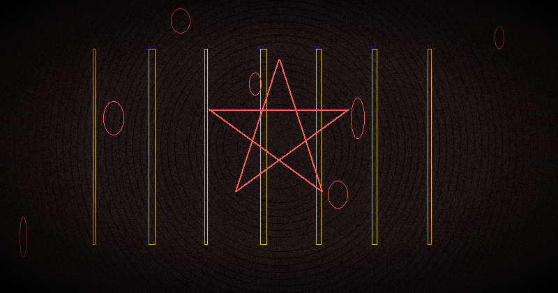

How to Banish: Complete Guide to Banishing Rituals & Space Cleansing
What Is Banishing? Why It Matters in Chaos Magick
Banishing is the magical act of clearing, purifying, and protecting a space or person from unwanted energies, influences, or entities. In chaos magick, banishing serves a dual purpose: it prepares the practitioner for focused magical work and resets the psychic environment after any operation.
Unlike ceremonial traditions where banishing is rigidly prescribed, chaos magick treats banishing as a technique to be experimented with, adapted, and optimized. The core principles remain the same across all methods:
- Intention: The clear will to remove what is not desired
- Focus: Directed attention that shifts the energy of a space
- Symbolism: A system of meaning that your subconscious accepts as effective
- Gnosis: An altered state where the banishing is charged with power
Why does banishing matter specifically in chaos magick? Because chaos magick works directly with belief as a tool. If you believe a space is energetically cluttered, it is — for your magical purposes. Banishing is the reset button. It clears the psychic slate so your sigils, servitors, and spells operate in a clean field of intent.
Without regular banishing, practitioners report phenomenon like: ritual results feeling muddy or weak, recurring unwanted thoughts during meditation, feeling watched or unsettled in their practice space, dreams becoming chaotic or unpleasant, and physical symptoms like headaches or fatigue after magical work.
The Lesser Banishing Ritual of the Pentagram (LBRP) Explained
The Lesser Banishing Ritual of the Pentagram (LBRP) is arguably the most famous banishing ritual in Western occultism. Developed by the Hermetic Order of the Golden Dawn in the late 19th century, it was later adopted and popularized by Aleister Crowley and subsequently by chaos magick pioneers like Peter J. Carroll.
The LBRP works on multiple levels simultaneously:
- Physical: Your body moves, gestures, and vocalizes
- Energetic: You visualize pentagrams of light at the four cardinal directions
- Mental: You focus your will on purification
- Astral: You call upon archangelic forces (or their symbolic equivalents)
- Divine: You invoke the Qabalistic Cross, aligning with the source of creation
Step-by-Step LBRP
- Stand facing east. This is the traditional direction of spiritual light. Perform the Qabalistic Cross: visualize a brilliant white sphere above your head. Draw it down to your forehead (Kether), then to your feet (Malkuth), then to your right shoulder (Geburah), then to your left shoulder (Chesed). Complete the cross.
- Trace a pentagram in the east. With your wand, athame, or right index finger, draw a large blue-white flaming pentagram in the air. Start at the top point (spirit), go down to the lower left (earth), up to the upper right (air), across to the upper left (water), down to the lower right (fire), and close back to the top.
- Vibrate the divine name YHVH. Yod-He-Vav-He. Feel each syllable resonate through your entire body. Imagine the pentagram glowing with brilliant light.
- Move to the south. Trace a pentagram. Vibrate ADNI (Adonai).
- Move to the west. Trace a pentagram. Vibrate AHIH (Eheieh).
- Move to the north. Trace a pentagram. Vibrate AGLA (Agla).
- Return to the east. Visualize the four archangels at the cardinal points: Raphael (east, yellow, air), Michael (south, red, fire), Gabriel (west, blue, water), Uriel (north, green, earth). Extend your arms in a cross posture and say: "Before me Raphael, Behind me Gabriel, On my right hand Michael, On my left hand Uriel."
- Repeat the Qabalistic Cross. Seal the ritual. State: "Let the Divine Light extend before me, behind me, to my right, to my left, above me, below me. It is done."
The full LBRP takes approximately 5-10 minutes once memorized. Many chaos magicians simplify it further — skipping the Hebrew names, replacing archangels with personal symbols, or reducing the directions to four waves of light.
Chaos Magick Approach to Banishing
Chaos magick offers a radically pragmatic approach: if it works, use it. If it does not, modify it or discard it. This is the core of the famous "nothing is true, everything is permitted" philosophy as applied to banishing.
Peter J. Carroll, in Liber Null & Psychonaut, suggested that the traditional LBRP can be replaced with any technique that induces the same state of purified intention. The key is not the specific names or symbols but the psychic shift they produce.
Chaos magick banishing typically emphasizes:
- Simplification: Reducing complex rituals to their essence
- Personalization: Using symbols and names that resonate with the practitioner
- Gnosis: Entering an altered state before, during, and after banishing
- Result-orientation: The banishing is successful when you feel the shift
A chaos magician might replace Hebrew divine names with pop culture references, fictional characters, or personally charged symbols — as long as the intent to banish is clear and the belief is fully engaged. This is the principle of belief as a tool: you temporarily adopt a belief system for the duration of the ritual, then discard it.
7 Banishing Methods for Every Practitioner
1. Visualization Banishing (Light Bubble)
The simplest and most portable banishing method. No tools, no words, no movement — just pure visualization. Close your eyes and imagine a sphere of brilliant white or golden light originating from your heart or solar plexus. Slowly expand this sphere outward, pushing through walls, floors, and ceilings. As it expands, visualize it pushing out all stagnant, negative, or foreign energy. The light bubble continues expanding until it encompasses your entire building, property, or even your neighborhood — whatever feels appropriate. Then hold it for a moment and let it settle as a permanent energetic boundary.
Variation: Imagine a whirlwind of violet flame spiraling through the space, incinerating all negative energy on contact. The violet flame, popularized by Saint Germain but adopted by chaos practitioners, is particularly effective because its color carries the correspondence of transmutation rather than destruction.
This method is ideal for: travel, hotel rooms, shared spaces, offices, and any situation where performing an overt ritual would be impractical.
2. Laughter Banishing (Chaos Magick Specific)
Laughter is perhaps the most uniquely chaos magick banishing method. It operates on the principle that negative energies cannot maintain coherence in the face of genuine, uncontrollable laughter. Humor disrupts the seriousness that often anchors unwanted psychic states.
Method: Stand in the center of your space. Begin laughing. It does not matter if it is forced at first — forced laughter quickly becomes real laughter. Let the laughter build, fill the room, echo off the walls. Visualize the sound vibrations shattering any stagnant energy patterns. Continue for 3-5 minutes, or until you are genuinely exhausted and giggling.
Why does this work? Laughter induces a natural gnostic state. It releases endorphins, lowers cortisol, shifts breathing patterns, and suspends the critical faculty — exactly the same mechanism used in sigil charging. Alan Moore, the occultist and comic book writer, famously described laughter as "the universal banishing ritual."
Variation: Combine laughter with absurdity. Put on ridiculous music. Dance badly. Make strange faces. The more you abandon dignity, the more effectively you shatter any energetic patterns that rely on seriousness to persist.
3. Elemental Banishing (Salt, Water, Smoke, Sound)
The four classical elements provide a complete banishing toolkit. Each element corresponds to a different aspect of cleansing:
Salt (Earth): Salt is the oldest purifying agent in magical history. Place bowls of sea salt in the corners of the room for 24 hours to absorb stagnant energy, then dispose of the salt outside your home. For floor cleansing, sprinkle salt across doorways and sweep it outward, visualizing the salt collecting negative energy as it moves. Black salt (salt mixed with charcoal or ash) is especially potent for protection.
Water (Water): Holy water, moon water, or simply charged water can be sprinkled or misted throughout a space. Hold your water bowl, charge it with the intention of purification, then flick droplets with your fingers into each corner. Florida Water (a commercial cologne with citrus and floral extracts) is a traditional favorite in folk magic and Hoodoo. For maximum effect, prepare moon water during the full Moon and charge it for banishing.
Smoke (Air): Smoke cleansing — often called smudging — uses the smoke of dried herbs to carry intention through the air. Standard herbs for banishing include: sage (white sage for general cleansing, black sage for deep purification), palo santo (sweet wood for raising vibration after cleansing), cedar (protection and grounding), rosemary (purification and memory), frankincense (high spiritual vibration), and copal (cleansing and protection). Light your chosen herb, let it smolder, and walk the smoke through every room, paying special attention to corners, doorways, and windows.
Sound (Fire - transformative): Sound vibrations physically disrupt energetic patterns. This overlaps with the next method but belongs here because of its connection to the fiery, transformative quality of vibration. See below.
4. Sound Banishing (Singing Bowls, Bells, Clapping)
Sound is one of the most physically immediate banishing methods. Unlike visualization, which requires mental focus, sound works directly on the physical environment and your nervous system simultaneously.
Singing bowls: Tibetan or crystal singing bowls produce sustained, complex overtones that fill a space completely. Strike the bowl and let it ring, walking the sound through each room. The vibration physically shakes dust particles and — energetically — breaks up stagnant patterns. Crystal bowls are particularly effective because their pure quartz composition resonates with clear intention.
Bells: A handbell, temple bell, or wind chime produces a sharp, clean attack followed by a decaying ring. The sudden onset of sound functions like a psychic alarm, scattering low-vibration energy. Ring a bell 3, 5, or 7 times in each corner of the room.
Clapping: The simplest sound tool — your hands. Clap sharply in each corner of the room, especially in corners where energy tends to accumulate. The clap should be intentional, not casual. Visualize each clap shattering negativity. In some traditions, clapping is believed to alert spirits that a banishing is taking place and they should depart.
Pro tip for chaos practitioners: Use a specific song or playlist as your banishing soundtrack. Each time you play it, the association strengthens. Eventually, pressing play alone triggers the banishing effect — a form of auditory anchoring that chaos magicians can exploit for rapid space clearing.
5. Physical Cleansing (Clean the Space Literally)
Never underestimate the magical power of actually cleaning your space. Chaos magick recognizes that the physical and the energetic are not separate — they are the same continuum. Dust, clutter, and disorganization are not just physical problems; they are energetic anchors that maintain stagnant patterns.
The method: Sweep or vacuum the entire space with deliberate intention. As you move the broom or vacuum, visualize it pulling energetic debris along with the physical dust. Open windows to let fresh air circulate. Wipe surfaces with a charged cleaning solution (water + vinegar + salt + a few drops of essential oil like lemon, lavender, or peppermint). Organize and declutter — remove anything broken, unused, or associated with negative memories.
This method is often the most effective because it addresses the root cause of energetic stagnation: physical neglect. A magician who cannot maintain a clean physical space will struggle to maintain a clean energetic space. Make physical cleansing the foundation of your banishing practice.
6. Sigil-Based Banishing
Chaos magick's signature technique applied to banishing: design a sigil specifically for space cleansing. The sigil encodes the intention "this space is purified and protected" or "all negative energy is banished."
Method: Write your statement of intent (e.g., "All stagnant and negative energy is removed from this space"). Remove vowels and repeated letters. Combine the remaining consonants into a unique sigil. Charge the sigil through gnosis (meditation, breathwork, laughter, or any gnostic method). Then place the sigil somewhere in the space — under a rug, behind a picture frame, taped to the underside of a desk.
Digital variation: Use a digital sigil generator app to create a banishing sigil. Set it as your phone wallpaper, or project it onto a wall using a projector for a full-room banishing. The digital method has the advantage of being instantly reproducible and sharable between practitioners.
Renewal: Sigil-based banishing is not permanent. The sigil's energy decays over time as it absorbs ambient negativity. Renew the sigil monthly, or whenever the space feels heavy again. Dispose of old sigils by burning them (if on paper) or deleting them (if digital) with the intention of releasing the used energy.
7. Digital Banishing (Using Apps and Digital Tools)
In the age of cybermancy, banishing can be accomplished through digital means. This approach is particularly useful for practitioners who work primarily with digital tools, or for spaces where traditional methods (smoke, salt, sound) are impractical — such as offices, dorm rooms, or shared living situations.
Binaural beats and isochronic tones: Specific frequencies can induce brain states conducive to banishing. Theta frequencies (4-8 Hz) are associated with deep cleansing and release. Delta frequencies (1-4 Hz) with deep subconscious reprogramming. Play these through speakers to saturate the space with cleansing vibrations.
Digital sigil projection: Display a banishing sigil on a screen or projector. The sigil's visual presence in the space acts as a continuous energetic cleanser. Modern digital sigil generators allow you to create animated, pulsing sigils that maintain active energy.
App-based ritual timers: Use ritual timer apps to structure your banishing practice. Set intervals for each direction, each element, or each step of your customized banishing sequence. The timer itself becomes a magical tool — when it sounds, you move to the next step with precision.
Drone and ambient sound generators: Apps that generate drone tones (sustained, resonant sounds) can fill a space with cleansing frequency. Low-frequency drones (around 80-120 Hz) are particularly effective for breaking up dense energy. High-frequency drones (above 2000 Hz) for spiritual purification. Run these for 10-15 minutes as a digital banishing in itself.
How to Banish Specific Energies
Different situations call for different banishing approaches. Here is how to adapt your methods to specific challenges:
Residual energy from previous occupants: When you move into a new home or workspace, the previous occupants' emotions, arguments, and habits have soaked into the walls. Use smoke cleansing (sage or copal) combined with loud sound (bells, clapping, or loud music) for every room. Open all windows. Follow with a light bubble visualization that fills the entire space with your own energy signature.
Energy after conflict or argument: Arguments leave sharp, jagged energetic residue. Do not use aggressive banishing methods (loud sounds, harsh smoke) immediately — they can agitate the already disturbed energy. Instead, use gentle methods: salt bowls left in the room for 24 hours, soft singing bowl sounds, and a peaceful visualization of golden light smoothing the energetic edges. Follow with physical cleaning — wash dishes, wipe surfaces, open curtains.
Energy after illness: Illness leaves heavy, low-vibration energy. Prioritize physical cleansing: open all windows for fresh air, wash all bedding and linens, and clean surfaces with antiseptic (which also has an energetic purifying effect). Use high-vibration sound (crystal singing bowls, high-frequency drones). Follow with a protective sigil placed near the bed or healing area.
Entity or attachment removal: If you suspect an actual entity or energetic attachment, use the strongest methods available: LBRP or a chaos-modified equivalent, combined with fire element (candles, or a small controlled fire in a cauldron). Call upon protective forces — whether they are archangels, spirit animals, fictional characters, or ancestral guardians. The key is absolute confidence. Doubt feeds the attachment. Use laughter banishing as a follow-up — entity attachments often thrive on fear and seriousness.
After heavy ritual work: Any intense magical operation leaves energetic residue. Some of this is your own power, which should be grounded rather than banished. After ritual, ground yourself (touch the earth, eat something, take a shower) rather than performing a full banishing. Only banish if the residual energy feels foreign or disruptive to your daily state.
How Often to Banish
The frequency of banishing depends on your practice, environment, and sensitivity. Here are general guidelines:
- Daily: Serious practitioners who work with heavy energies (goetia, necromancy, intense sigil work) should consider a brief banishing at the start and end of each day. This can be as simple as a 30-second light bubble visualization.
- Before and after ritual: Always banish before any magical operation (to clear the field) and after (to seal and ground). This is the minimum standard for safe practice.
- Weekly: For general space maintenance, once per week is sufficient for most practitioners. Combine with your regular cleaning day for efficiency.
- After significant events: Banish after arguments, illness, disturbing dreams, nightmares in the space, visits from negative people, and any intense emotional event that occurred in the space.
- Seasonally: Four times per year — at the equinoxes and solstices — perform a deep cleansing of your entire living space, including areas you rarely access (attics, basements, storage closets).
- Waning Moon: If you follow lunar phases, the waning Moon (from full to new) is the ideal time for banishing work. The decreasing light naturally supports release and purification.
Trust your intuition. If a space feels heavy, banish. If it feels light, let it be. Over-banishing can strip a space of its natural energetic character just as surely as neglect can clog it.
What NOT to Do When Banishing
Banishing mistakes can be ineffective at best and counterproductive at worst. Here are the most common errors and how to avoid them:
1. Banishing with fear or anger. Banishing performed while angry or afraid often reinforces the very energy you are trying to remove. The emotional charge feeds the pattern. Always center yourself first — breathe, ground, and approach banishing from a state of calm authority.
2. Treating banishing as warfare. You are not fighting demons in every corner. Most energetic stagnation is simply residue, not malevolent. Approaching banishing as an attack creates conflict where none exists. Instead, think of it as cleaning — same as washing dishes or sweeping floors.
3. Mixing incompatible traditions without understanding. Using sage from Native American traditions while reciting Hebrew divine names while invoking Greek gods while playing Buddhist singing bowls is not powerful eclecticism — it is energetic noise. Choose one system and use it with full intent. You can switch systems between sessions, but within a single banishing, coherence matters.
4. Banishing without grounding afterward. Banishing removes energy. If you do not ground and replace with stable energy, you can feel spacey, lightheaded, or disconnected. After banishing, eat something salty, touch the earth, take a warm shower, or spend a few minutes in quiet breathing.
5. Neglecting physical cleanliness. No amount of energetic banishing will fix a physically dirty space. Energetic work is not a substitute for sweeping the floor. Physical and energetic cleansing work together — one reinforces the other.
6. Obsessing over perfection. If you miss a corner, forget a step, or your visualization wavers, the banishing is not ruined. The intention is what matters. Obsessive perfectionism feeds the very self-doubt that weakens magical work. Trust that your intent is sufficient.
7. Banishing your own power. Some practitioners banish so aggressively that they also banish their own accumulated magical charge. After ritual work, ground and integrate rather than banishing. Only banish if there is clear foreign or disruptive energy present.
Building Your Personal Banishing Routine
The most effective banishing practice is one you will actually do consistently. Design a routine that fits your lifestyle:
Minimum routine (3 minutes): Stand in the center of your space. Take 3 deep breaths. Visualize a sphere of white light expanding from your heart to fill the entire room. Say aloud: "This space is clear, protected, and ready for my work." Clap once. Done.
Standard routine (10 minutes): Open windows. Sound a bell or singing bowl in each corner. Walk through with smoke (sage, palo santo, or incense). Visualize a cleansing light. Close windows. Ground with a snack or shower.
Full ritual routine (20-30 minutes): Perform a chaos-adapted LBRP or your own customized banishing sequence combining elements, sounds, visualization, and sigil placement. Meditate for 5 minutes afterward to integrate the clean energy.
Experiment with different methods for 1-2 weeks each. Note which methods produce the clearest subjective shift in your space and your mental state. Build your personal banishing protocol from what works best for you.
Automate your banishing with digital tools.
The Cha0smagick Labs app suite includes ritual timers, sound generators, and digital sigil tools that support your banishing practice. All apps are 100% offline, one-time purchase, no ads, no tracking.
Explore the App Suite →Frequently Asked Questions
How often should I banish my space?
Daily practice is ideal for serious magicians. At minimum, banish before and after every ritual. For general space cleansing, once per week or after any significant emotional event, conflict, or illness in the space.
Can I banish without tools?
Yes. Visualization alone is sufficient for effective banishing. The LBRP uses only your body and imagination. Sound, smoke, and physical tools are optional enhancements, not requirements.
What is the Lesser Banishing Ritual of the Pentagram?
The LBRP is a foundational ceremonial magick ritual developed by the Hermetic Order of the Golden Dawn. It uses the Qabalistic Cross, pentagram visualizations, and archangel invocations to purify the magician and their working space. Chaos magicians often adapt or simplify it.
Does chaos magick require traditional banishing?
Chaos magick encourages adapting any technique that works. Traditional LBRP is one option, but chaos practitioners also use laughter, sound, sigils, and improvised methods. The core principle is intent and belief as tools.
What should I avoid when banishing?
Avoid using fear-based mentality, performing banishing when emotionally volatile, neglecting physical cleanliness, mixing incompatible traditions without understanding, and obsessing over perfection. The most common mistake is treating banishing as warfare rather than purification.